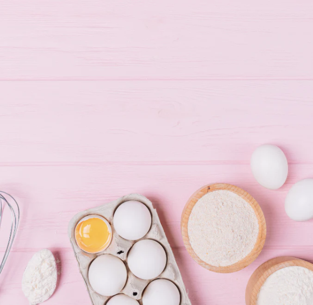
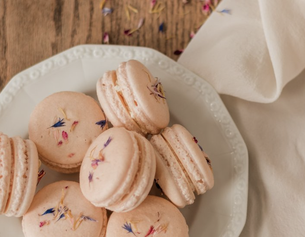
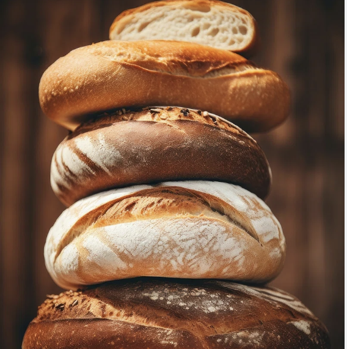

Tips and Facts About Baking
Baking is a cooking techneque using dry heat, mostly in an oven. Baking dates back to when people first cooked with fire. There is actually a lot of science that goes into baking, like how ingredients react together to create bubbles that make dough rise. Baking is a type of art and science, which is fun and tasty. If you aren't big into experimenting, you can always follow a simple recipe that creates a delicious baked good! Everyone should try baking at least once!
Baking Screenshots
I have always loved making macaroons. Not only for the process, but also for the amazing taste and textures! Baking macaroons is a fun process where you mix almond flour, powdered sugar, and egg whites until you have a smooth batter. Dont forget to add color! Then, you pipe the batter into small circles and bake them until they are crispy on the outside and chewy on the inside. Once cooled, make your favorite filling, and pipe it between two macaroon rounds to make a sandwhich. Though this sounds easy, macaroons are one of the hardests baked goods to master. But, the taste will be worth it!
One current baking trend is bread! Baking bread takes patients and time. The ingredients include basics such as flour, water, yeast, and salt to create dough. You then have to carefully leave the dough to rise over time to produce carbon dioxide, and the dough will expand in size! Then, you can create a beautiful design in your dough, and place it in the oven to cook. Wait and watch your dough turn into a golden brown loaf of bread. There is nothing better than the smell and taste of fresh homemade bread! Bread is one of my favorites to bake!
